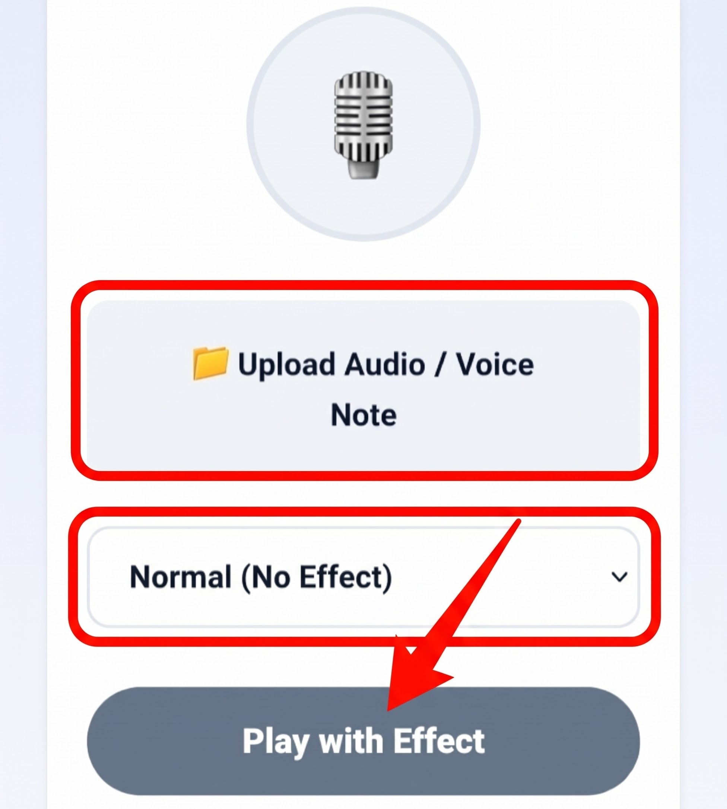

Voice Transformer
Apply iconic vocal presets to your audio recordings in real time. Choose from high-speed chipmunk tones, deep monster registers, or natural pitch modulation.
🤖
Apply iconic vocal presets to your audio recordings in real time. Choose from high-speed chipmunk tones, deep monster registers, or natural pitch modulation.
Disables pitch preservation algorithms to naturally shift vocal formants in real-time.
Your voice recordings remain 100% confidential inside your local device memory.
Immediate playback without server queues, conversion timeouts, or lossy downloads.
Effectively conceals unique vocal harmonic identities for anonymous podcasts and notes.
Human speech carries a distinct acoustic identity defined by fundamental frequencies, vocal tract resonances, and formant structures. When an individual speaks, their vocal cords vibrate at specific frequencies typically ranging between 85 Hz and 255 Hz. Modifying these characteristics has traditionally required specialized analog hardware vocoders or complex DSP workstations. In modern digital production, pitch transformation has evolved into a vital creative technique utilized across film sound design, video game voice acting, podcast production, and social media content creation.
The MiMusic Voice Transformer accomplishes vocal re-pitching through advanced browser-based resampling techniques. By explicitly disabling the browser's automatic pitch correction algorithms, our tool recalculates the temporal density of audio samples in memory, shifting both fundamental frequencies and harmonic formant envelopes in real time.
Follow these three simple steps to apply instant vocal effects:

Select your audio recording, click a preset voice style, and hit play.
Tap the dashed file selector to browse device storage. We support standard formats including MP3, WAV, AAC, and OGG.
Click on Chipmunk (1.5x) for energetic high registers, Deep Monster (0.6x) for heavy baritone, or Normal (1.0x) to reset.
Hit "Play Transformed Voice". The browser hardware-accelerated sound engine executes the effect instantly without rendering delays.
Accelerating playback speed by 1.5x compresses digital sound wave cycles chronologically. Because automatic phase vocoders are bypassed, the harmonic formant peaks of spoken vowels shift upward into higher octaves. This mimics a drastically shortened human vocal tract, generating the beloved animated high-energy cartoon voice popularized in viral videos and meme clips.
Decelerating playback down to 0.6x expands the temporal spacing of acoustic oscillations. This mechanical stretching drags vocal formants downward, transforming ordinary speech into an ominous, heavy, and resonant baritone. Sound designers frequently layer this technique with ambient reverbs to produce menacing villain dialogue in indie games and podcasts.
A person's vocal signature is considered biometric data. In an age of automated acoustic surveillance and voice-matching artificial intelligence, uploading whistleblowing recordings, sensitive journalistic testimonials, or public interview notes requires dependable identity masking:
Our tool manipulates the underlying audio sample clock using native HTML5 media controls. By disengaging automatic pitch correction, speeding up playback shifts the harmonic frequencies upward into higher octaves, while slowing it down shifts them into deeper registers.
No. Your files are processed 100% locally in your device RAM via browser sandboxing. No recordings are ever uploaded, recorded, or transmitted to any third-party server.
Yes. Pitch shifting significantly disrupts individual vocal resonance and formant fingerprints, making it an effective basic tool for concealing identity in podcasts, interviews, and public voice notes.
The tool supports all major browser-compatible audio formats, including MP3, WAV, AAC, M4A, and OGG files on both desktop and mobile platforms.